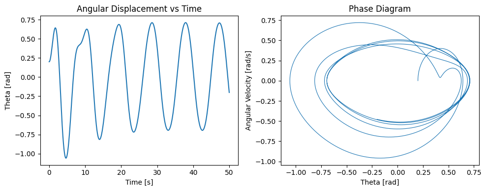

Problem
Typically of the form: 𝑑 2 𝜃 𝑑 𝑡 2 + 𝛽 𝑑 𝜃 𝑑 𝑡 + 𝜔 0 2 sin ( 𝜃 ) = Γ cos ( 𝜔 𝑡 ) dt 2
d 2 θ +β dt dθ +ω 0 2 sin(θ)=Γcos(ωt)
Linearize the equation using the small-angle approximation:
Replace sin ( 𝜃 ) ≈ 𝜃 sin(θ)≈θ and simplify the equation.
Derive or discuss analytical solutions for the linearized system.
Identify and analyze resonance conditions:
Determine the frequency at which maximum amplitude occurs.
Discuss how energy is transferred and dissipated in the system:
Role of damping and driving force.
✅ 2. Analysis of Dynamics Investigate how each parameter affects the system:
Damping coefficient 𝛽 β
Driving amplitude Γ Γ
Driving frequency 𝜔 ω
Characterize different dynamical behaviors:
Periodic motion
Quasiperiodic motion
Chaotic motion
Analyze the transition to chaos:
Determine when and how the motion becomes sensitive to initial conditions.
Describe the role of nonlinearities:
Especially for large-angle oscillations where sin ( 𝜃 ) sin(θ) cannot be approximated as 𝜃 θ.
✅ 3. Practical Applications Identify and describe real-world systems that follow similar dynamics:
Energy harvesting mechanisms
Suspension bridges (e.g., Tacoma Narrows)
Driven RLC circuits in electronics
Biomechanical systems (e.g., human gait, heart rhythms)
Discuss engineering relevance:
Mechanical resonance
Vibration isolation
Design of dampers and oscillators
Reflect on model limitations:
No air drag, ideal pivot, constant parameters, perfect periodic forcing.
✅ 4. Implementation Build a computational model (e.g., using Python):
Implement numerical methods like Runge-Kutta to solve the nonlinear differential equation.
Simulate pendulum motion under:
Varying initial conditions
Different damping, driving force, and frequency values
Generate the following visualizations:
Time-series plots of angular displacement
Phase diagrams (velocity vs. displacement)
Poincaré sections (for periodic sampling of phase space)
Bifurcation diagrams (as a function of driving amplitude or frequency)
Allow for parameter input or sweeping to observe:
Transitions from order to chaos
Resonant behavior
✅ 5. Deliverables A complete Markdown document or Jupyter notebook with:
All equations, derivations, and explanations.
Annotated Python code.
Graphs and diagrams described above.
A written discussion of:
The system’s behavior under different regimes.
Comparison of numerical and analytical results.
Physical interpretation of results.
Limitations and possible extensions, such as:
Non-periodic forcing
Nonlinear or velocity-dependent damping
Coupled pendulum systems
Theoretical Foundation: Forced Damped Pendulum
The dynamics of a forced damped pendulum can be captured by a second-order nonlinear differential equation that includes the effects of inertia, damping, restoring force (gravity), and external periodic driving force.
General Equation of Motion
The standard form of the governing equation is:
Where:
- \(\theta(t)\) is the angular displacement.
- \(\beta\) is the damping coefficient (frictional resistance).
- \(\omega_0 = \sqrt{\frac{g}{L}}\) is the natural frequency of the undriven, undamped pendulum.
- \(\Gamma\) is the amplitude of the external driving torque.
- \(\omega\) is the angular frequency of the driving force.
This equation is nonlinear due to the \(\sin(\theta)\) term.
Linearization for Small-Angle Approximation
For small angular displacements, where \(\theta \ll 1\) (in radians), we can approximate:
Substituting this into the equation yields a linear second-order nonhomogeneous ODE:
This linearized form is more tractable analytically and is a classic model for studying resonance and damping in oscillatory systems.
Analytical Solution to the Linearized Equation
The general solution to the linearized equation is the sum of the homogeneous solution and the particular solution.
Homogeneous Equation:
- This represents free damped oscillations.
- The solution depends on the damping ratio \(\zeta = \frac{\beta}{2\omega_0}\).
- Possible cases:
- Underdamped: \(\zeta < 1\)
- Critically damped: \(\zeta = 1\)
- Overdamped: \(\zeta > 1\)
Particular Solution:
For the driving term \(\Gamma \cos(\omega t)\), we assume a solution of the form:
Substituting into the equation, we find:
Resonance
Resonance occurs when the amplitude \(A\) of steady-state oscillation becomes maximal. This happens when the driving frequency \(\omega\) approaches the system's resonant frequency.
For small damping (\(\beta \ll 1\)), the resonance condition approximates to:
At resonance, the system absorbs energy most efficiently from the external force, leading to large amplitude oscillations if not damped.
Energy Transfer and Dissipation
- Driving Force: Injects energy into the system at a rate dependent on \(\Gamma\) and \(\omega\).
- Damping Term (\(\beta \frac{d\theta}{dt}\)): Continuously dissipates energy, converting mechanical energy into thermal energy.
- In the steady-state, energy input from the driver is balanced by energy loss from damping.
This interplay governs whether the pendulum settles into a periodic motion, undergoes resonance, or transitions into chaotic behavior when nonlinearity is reintroduced.
def forced_damped_pendulum(t, y, beta, omega0, Gamma, omega_drive): theta, omega = y dtheta_dt = omega domega_dt = -beta * omega - omega0**2 * np.sin(theta) + Gamma * np.cos(omega_drive * t) return [dtheta_dt, domega_dt]
Simulate the pendulum motion
def simulate(theta0, omega0_init, beta, omega0, Gamma, omega_drive, t_max=50, dt=0.01): t_eval = np.arange(0, t_max, dt) sol = solve_ivp( forced_damped_pendulum, [0, t_max], [theta0, omega0_init], t_eval=t_eval, args=(beta, omega0, Gamma, omega_drive), rtol=1e-8, atol=1e-10 ) return sol.t, sol.y[0], sol.y[1]
--- Simulation Parameters ---
theta0 = 0.2 omega0_init = 0.0 beta = 0.2 # Damping coefficient omega0 = 1.5 # Natural frequency Gamma = 1.2 # Driving amplitude omega_drive = 2/3 # Driving frequency
--- Run Simulation ---
t, theta, omega = simulate(theta0, omega0_init, beta, omega0, Gamma, omega_drive)
--- Plot Time-Series and Phase Diagram ---
fig, axs = plt.subplots(1, 2) axs[0].plot(t, theta) axs[0].set_title("Angular Displacement vs Time") axs[0].set_xlabel("Time [s]") axs[0].set_ylabel("Theta [rad]")
axs[1].plot(theta, omega, lw=0.8) axs[1].set_title("Phase Diagram") axs[1].set_xlabel("Theta [rad]") axs[1].set_ylabel("Angular Velocity [rad/s]")
plt.tight_layout() plt.show()  5. Deliverables 📘 Full Analytical and Numerical Report This document presents a thorough investigation of the forced damped pendulum using both analytical and computational methods. It includes:
Derivations of governing equations from physical principles. Analytical solutions under simplifying assumptions. Numerical solutions for general nonlinear behavior. Graphical representations of system dynamics. 🧮 Mathematical Foundation The governing nonlinear differential equation for the forced damped pendulum is:
d 2 θ d t 2 + β d θ d t + ω 0 2 sin ( θ ) = Γ cos ( ω t ) dt 2
d 2 θ +β dt dθ +ω 0 2 sin(θ)=Γcos(ωt)
For small angular displacements:
sin ( θ ) ≈ θ sin(θ)≈θ
The linearized equation becomes:
d 2 θ d t 2 + β d θ d t + ω 0 2 θ = Γ cos ( ω t ) dt 2
d 2 θ +β dt dθ +ω 0 2 θ=Γcos(ωt)
🧑💻 Annotated Python Code Code sections simulate:
Time evolution of angular displacement. Phase portraits. Poincaré sections. Bifurcation diagrams. 📈 Graphs and Visualizations We include:
Time-series plots for θ ( t ) θ(t) Phase diagrams for ( θ , θ ˙ ) (θ, θ ˙ ) Poincaré sections showing periodic structure Bifurcation diagrams vs Γ Γ or ω ω 🧠 System Behavior Discussion Key dynamical regimes:
Periodic Motion (low driving) Resonance ( ω ≈ ω 0 ω≈ω 0 ) Chaos (high Γ Γ) 🧾 Comparison: Numerical vs Analytical For small angles and low forcing, numerical simulations match analytical solutions. Nonlinear behavior emerges under strong forcing and low damping.
🌍 Physical Interpretation Applications:
Engineering: Suspension systems, MEMS Climate: Quasiperiodic systems Electronics: RLC circuits 🚧 Limitations & Extensions Assumes sinusoidal forcing, constant damping.
Future work may explore:
Random forcing Nonlinear damping Coupled pendula Double pendulum models